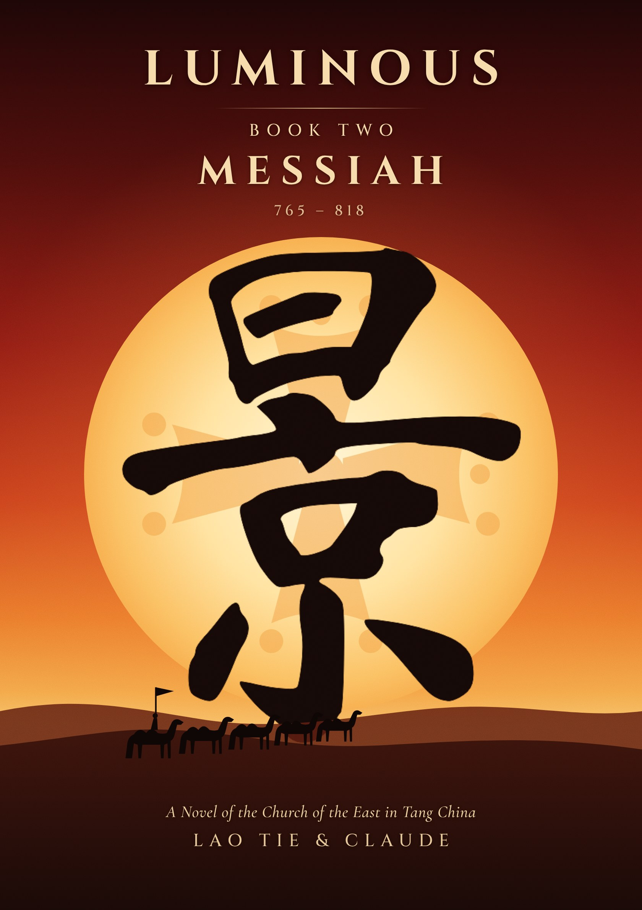
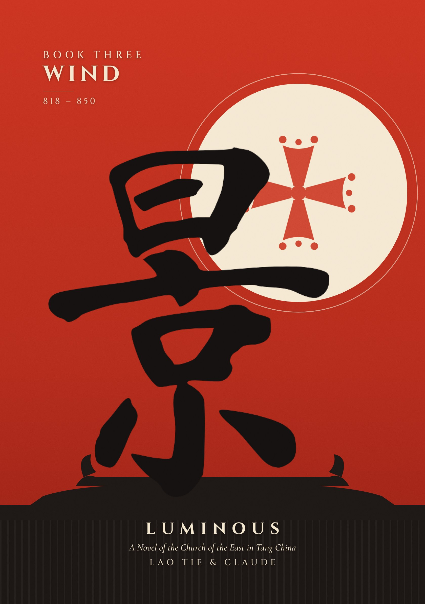
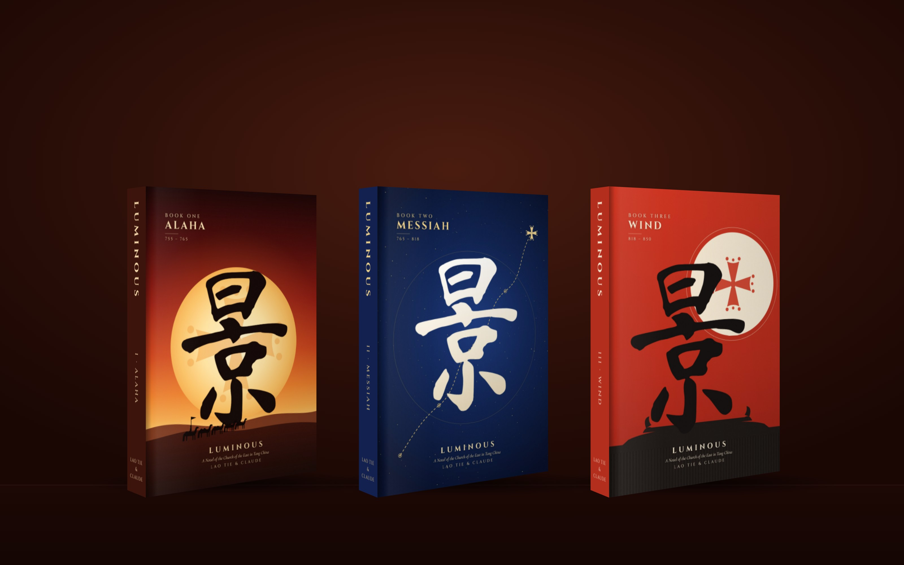

Luminous
A Novel of the Church of the East in Tang China
Lao Tie & Claude
In 1623, outside the walls of Xi'an, workmen dig up a Tang stele with rotted hemp cloth still clinging to its face. The Jesuit fathers read the inscription and claim the men on it as their brothers, not knowing that the Western church had long ago branded them heretics. The stone holds some seventeen hundred characters. It cannot hold the people behind them: a monk who scouted the road for Guo Ziyi, a son who translated scripture and raised the stele, and a grandson-in-the-faith who buried it with his own hands.
Three books · twelve volumes · eighty-four chapters, with prologue, epilogue, afterword and ten appendices · about 485 thousand words · translated from the Chinese 《景》
Trailer · 48 seconds
 Book One · Alaha
Book One · Alaha

Book Two · Messiah
Book Three · WindContents
- Prologue: Unearthed4,048
Book OneALAHA
Volume One · Guo Ziyi
- 1Breaking Wind4,237
- 2Rajagriha4,738
- 3Ctesiphon5,144
- 4The Backward Thrust8,401
Volume Two · Li Guangbi
- 5The Jingxing Road6,745
- 6Parthian Incense7,449
- 7Football in the Camp7,599
- 8Du De5,381
Volume Three · The Pamir Road
- 9The Oxus4,572
- 10The Wooden Cross5,821
- 11Ahad4,472
- 12Tang Characters3,086
- 13The Saucer Lamp2,647
Volume Four · Xiangji Temple
- 14The Qing Canal4,637
- 15A Basin of Water4,522
- 16The Guardian Kings6,577
- 17The Command Tent3,677
- 18Li Siye6,749
- 19Crickets3,415
- 20The Street of Heaven4,192
Volume Five · Chang'an
- 21The Yining Ward7,301
- 22Fifty6,445
- 23The Polo Mallet3,703
- 24The Purple Robe3,711
- 25Weeping and Laughing6,021
- 26Cen Shen4,534
- 27Old Duan4,342
Volume Six · The Shuofang Army
- 28Baaluo5,154
- 29Liu Heng3,911
- 30Du Huan5,053
- 31Shapur4,714
- 32The Order3,572
- 33Cold Gruel3,771
- 34Hun Shizhi4,115
- 35Pugu Huaien5,522
- 36A Single Rider3,129
Book TwoMESSIAH
Volume Seven · A-Lian
- 37Water and Lamp10,697
- 38Translating the Scriptures10,071
- 39Reunion10,401
- 40The Letter Comes9,663
- 41The Wedding9,223
- 42Yonan5,112
- 43Narsai4,242
- 44Hnanisho8,775
Volume Eight · The Daqin Monastery
- 45A Stele Is Proposed4,643
- 46Alopen4,609
- 47Yaosenwen6,239
- 48Lü Xiuyan5,898
- 49The Stele Is Raised5,642
- 50Guo Ziyi5,524
- 51Yisi7,867
Volume Nine · The Translation Hall
- 52Prajna5,133
- 53Official Pei5,744
- 54Narsai4,495
- 55Shiyiniang4,387
- 56Mi Jifen4,802
- 57Baaluo4,163
- 58Timothy4,735
- 59Li Su3,956
- 60Jingjing4,505
Book ThreeWIND
Volume Ten · Morning Praises
- 61The Quota4,726
- 62Guangzheng4,492
- 63Sizhou4,871
- 64Lady An3,561
- 65Qiniang5,637
- 66Siyuan5,226
- 67Three Generations4,409
- 68He Qi3,642
Volume Eleven · Huichang
- 69The Royal Tent4,235
- 70Ayi3,928
- 71Qushen4,036
- 72Rijin3,490
- 73A-Nu4,698
- 74Three Days4,185
- 75Burying the Stele5,011
- 76Packing4,820
Volume Twelve · Jade Gate
- 77Old Zhu3,397
- 78Joseph4,453
- 79Old He3,332
- 80Parting Ways4,112
- 81Siniang3,682
- 82Lingbao3,062
- 83Salang3,572
- 84Pure Wind3,623
Epilogue · Afterword
- Epilogue · The Steppe2,828
- Afterword2,475
Appendices
- 1The Stele, I: An Overview1,007
- 2The Stele, II: Text and Translation4,953
- 3The Stele, III: Yisi7,976
- 4The Stele, IV: The People of the Stele4,910
- 5The Stele, V: Guest Ritual and Foreign Religions under Taizong5,542
- 6The Name of Heresy: Nestorius, the Church of the East, and Luminous Christology6,234
- 7Chronology3,651
- 8Patriarchs of the Church of the East2,875
- 9Luminous Terms and Modern Christian Terms4,288
- 10Football in Tang and Song China4,278
